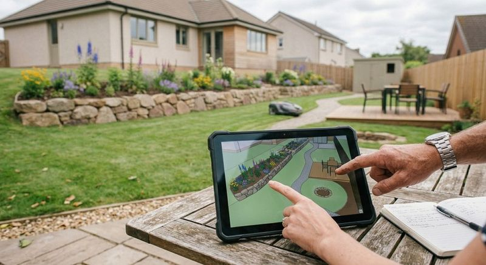

Particuliers
Un arbre à tailler, un jardin à créer ou à entretenir : une réponse claire et un devis gratuit.
Professionnelle et qualifiée, l’équipe d’arboristes grimpeurs et de paysagistes met son savoir-faire à votre service, du conseil au suivi, pour prendre soin de votre parc arboré et de vos espaces verts tout en respectant l’environnement.
Florent Breugnot, dirigeant
Les interventions s’adressent aussi bien aux particuliers qu’aux professionnels et aux administrations territoriales.
Un arbre à tailler, un jardin à créer ou à entretenir : une réponse claire et un devis gratuit.
Des chantiers réguliers ou ponctuels, menés dans les délais prévus.
Entretien des arbres et des espaces verts publics de l’Essonne.

Avant de grimper ou de creuser, l’équipe écoute, conseille et cadre le projet avec vous.
Prendre soin de vos arbres en respectant l’environnement.
Une équipe qui tient compte de vos demandes et de vos désirs.
Les délais définis ensemble sont ceux du chantier.